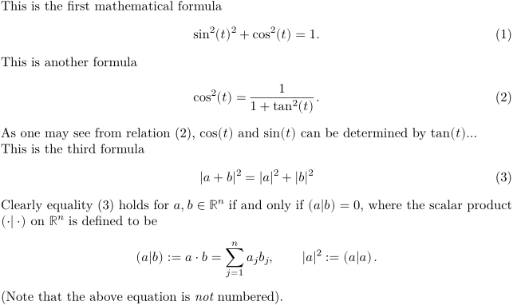

Contents
Summary
The environment \startformula ... \stopformula is used for displayed mathematical material
Settings
| \startformula[...,...] ... \stopformula | |
| [...,...] | packed tight middle frame depth line halfline -line -halfline inherits from \setupbodyfont |
Settings assignment
| \startformula[...=...,...] ... \stopformula | |
| option | packed tight middle frame depth line halfline -line -halfline see \setupbodyfont |
| margin | yes no standard dimension |
| grid | see \snaptogrid |
Description
The contents of this environment are typeset in mathematical mode. The environment as a whole can also be used as an argument of and immediately preceding
\placeformula
, in which case the typeset result can be numbered and referenced.
Examples
Example 1
-
This is the first mathematical formula \placeformula[First] \startformula \sin^2(t)^2 + \cos^2(t) = 1. \stopformula This is another formula \placeformula[eqn:tangent] \startformula \cos^2(t) = \frac{1}{1+\tan^2(t)}. \stopformula As one may see from relation~(\in[eqn:tangent]), $\cos(t)$ and $\sin(t)$ can be determined by $\tan(t)$\dots This is the third formula \placeformula[Pythagora] \startformula |a+b|^2 = |a|^2 + |b|^2 \stopformula Clearly equality (\in[Pythagora]) holds for $a,b \in {\Bbb R}^n$ if and only if $(a|b) =0$, where the scalar product $(\cdot|\cdot)$ on ${\Bbb R}^n$ is defined to be \startformula (a|b) := a\cdot b =\sum_{j=1}^{n}a_jb_j, \qquad |a|^2 := (a|a). \stopformula (Note that the above equation is {\it not\/} numbered).
- 
Notes
See also
- \definebodyfont
- \setupbodyfont
- \snaptogrid
- strc-mat.mkiv
- \defineformula Allows the definition of special mathematical environments
- startformula For some predefined special mathematical environments